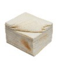

El “carlito” nacio en la Ciudad de Rosario. En apariencia no es más que un sencillo tostado mixto, pero el diferencial pasa por la salsa, que es kétchup. El creador fue un tal Rubén Ramírez, propietario de una choppería llamada Cachito, que estaba en la Av. Pellegrini y calle Maipú. En la máquina donde hacían los lomitos se le ocurrió poner pan de miga, queso, jamón y kétchup, y lo cierto es que tuvo mucho éxito y se puso de moda en Rosario.
Ingredientes
Manteca
Ketchup
Jamón cocido
Queso de máquina
Pan de miga

Preparacion paso a paso
Untar los panes con manteca y kethcup.
Sumar el jamón y queso.
Tostar vuelta y vuelta en una plancha o Sandwichera.
Untar el pan con manteca en la parte de arriba para que se dore.
Colocar de nuevo en la plancha y dejar tostar.
Cortar en triangulos y servir caliente.
Mira el video para hacer la receta y como llegar -->